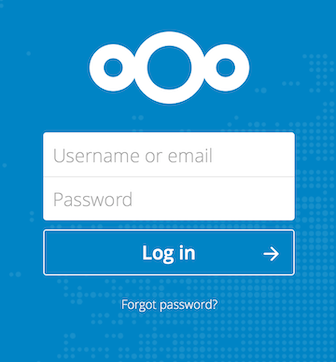

A interface Web Nextcloud
Você pode se conectar ao seu servidor Nextcloud usando qualquer navegador da web. Basta apontá-lo para o URL do servidor Nextcloud (por exemplo, cloud.example.com) e inserir seu nome de usuário e senha:

Requerimentos do navegador web
Para obter a melhor experiência com a interface da web do Nextcloud, recomendamos que você use a versão mais recente e compatível de um navegador desta lista:
Google Chrome/Chromium (Desktop e Android)
Mozilla Firefox (Desktop e Android)
Apple Safari (Desktop e iOS)
Microsoft Edge
Nota
Nem todas as versões são suportadas. O Nextcloud foi testado e construído para funcionar apenas com essas versões. <https://browserslist.dev/?q=PjAuMjUlLCBub3Qgb3BfbWluaSBhbGwsIG5vdCBkZWFkLCBGaXJlZm94IEVTUg==>`_
Nota
Se quiser usar o Nextcloud Talk, você precisa executar o Mozilla Firefox 52 ou o Google Chrome/Chromium 49 para ter uma experiência com chamadas de vídeo e compartilhamento de tela.
Aviso
O Microsoft Internet Explorer NÃO é suportado.
Navegando na interface do usuário principal
Por padrão, a interface Web do Nextcloud abre em sua página de Painel ou Arquivos:

Em Arquivos, você pode adicionar, remover e compartilhar arquivos, e o administrador do servidor pode alterar os privilégios de acesso.
A interface do usuário Nextcloud contém os seguintes campos e funções:
Menu de seleção de aplicativos (1): localizado no canto superior esquerdo, você encontrará todos os seus aplicativos disponíveis em sua instância do Nextcloud. Clicar em um ícone de aplicativo irá redirecioná-lo para o aplicativo.
Campo Informações do aplicativo (2): localizado na barra lateral esquerda, fornece filtros e tarefas associadas ao aplicativo selecionado. Por exemplo, ao usar o aplicativo Arquivos, você tem um conjunto especial de filtros para localizar rapidamente seus arquivos, como arquivos que foram compartilhados com você e arquivos que você compartilhou com outras pessoas. Você verá itens diferentes para outros aplicativos.
Visualização do aplicativo (3): O campo central principal na interface do usuário Nextcloud. Este campo exibe o conteúdo ou recursos do usuário do aplicativo selecionado.
Barra de navegação (4): Localizada sobre a janela de visualização principal (a Visualização do aplicativo), esta barra fornece um tipo de navegação estrutural que permite que você migre para níveis mais altos da hierarquia de pastas até o nível raiz (home) .
Novo botão (5): Localizado na barra de navegação, o botão
Novopermite criar novos arquivos, novas pastas ou fazer upload de arquivos.
Nota
Você também pode arrastar e soltar arquivos de seu gerenciador de arquivos para a Visualização do Aplicativo de Arquivos para carregá-los em sua instância.
Campo ** Pesquisar ** (6): Clique na lupa no canto superior direito para pesquisar arquivos e entradas do aplicativo atual.
Menu Contatos (7): fornece uma visão geral sobre seus contatos e usuários em seu servidor. Dependendo dos detalhes fornecidos e dos aplicativos disponíveis, você pode iniciar uma chamada de vídeo diretamente com eles ou enviar e-mails.
Botão (8) Visualização de Grade : Parece com quatro pequenos quadrados, que alterna a visualização da grade para pastas e arquivos.
Menu Configurações (9): Clique na imagem do seu perfil, localizada à direita do campo Pesquisar, para abrir o menu suspenso Configurações. Sua página de configurações fornece as seguintes configurações e recursos:
Links para baixar aplicativos de desktop e móveis
Uso do servidor e espaço disponível
Gerenciamento de senha
Configurações de nome, e-mail e foto do perfil
Gerenciar navegadores e dispositivos conectados
Membros do grupo
Configurações da linguagem da interface
Gerenciar notificações
ID da Núvem Federada e botões de compartilhamento de mídia social
Gerenciador de certificados SSL/TLS para armazenamentos externos
Suas configurações de dois fatores
Informação da Versão do Nextcloud
Veja a seção Configurando suas preferências para aprender mais sobre essas configurações.